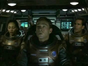
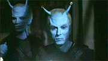

|
Os
novos 'produtores' de Enterprise
 Fred
Dekker produtor-consultor. Antoinette Stella produtora.
Stephen Beck editor-executivo de histrias. Andre Jacquemetton
e Maria Jacquemetton so editores de histrias. Podemos,
entretanto, resumir a posio de todos esses profissionais de Enterprise
em uma nica palavra: roteiristas. Fred
Dekker produtor-consultor. Antoinette Stella produtora.
Stephen Beck editor-executivo de histrias. Andre Jacquemetton
e Maria Jacquemetton so editores de histrias. Podemos,
entretanto, resumir a posio de todos esses profissionais de Enterprise
em uma nica palavra: roteiristas.
Todos eles foram contratados para escrever episdios para a srie,
numa tentativa de trazer o tal do "sangue novo" que Jornada
estava tanto precisando. Mas os ostentosos cargos que cada um
deles acabou ganhando mostra que no foram s os fs que Rick
Berman e Brannon Braga precisaram convencer, ao dizer que Enterprise
era o caminho certo para o franchise. Ao que parece, esses
roteiristas precisaram ser seduzidos com posies de chefia e
altos salrios para embarcarem na mais nova investida da
Paramount no universo trekker.
Na prtica, todos eles esto subordinados a Rick Berman e,
especialmente, Brannon Braga, que coordena as duas equipes de
roteiristas --ou seja, como se fossem mesmo simples
roteiristas. Entretanto, os ttulos do maior importncia e
experincia, e recheiam seu currculo, estabelecendo novos padres
para futuros empregos na indstria do entretenimento. Uma vez
produtor, sempre produtor, o que acaba acontecendo.
O engraado que, at onde eu sei, isso nunca ocorreu antes em
Jornada --algum chegar equipe j na condio de
produtor (exceto, claro, quando o profissional havia sido
contratado especificamente para exercer essa funo, como o hoje
todo-poderoso Rick Berman). Normalmente, os roteiristas precisavam
batalhar anos e anos para galgar as escadas do poder e chegar s
posies que Michael Piller, Ira Steven Behr e Brannon Braga j
ocuparam, no topo da chefia do programa.
Andre Bormanis, por exemplo, que trabalha em Jornada nas
Estrelas desde A Nova Gerao como consultor cientfico,
recebeu sua promoo: virou roteirista. Phyllis Strong e Mike
Sussman, dois roteiristas que se integraram equipe no fim da
sexta temporada de Voyager, agora so editores-executivos
de histrias. Essas subidas de cargo representam uma evoluo e
uma recompensa para os que sobreviveram transio do sculo
24 para o sculo 22, mas empalidecem quando colocadas ao lado dos
cargos de "produtor disso" ou "quase produtor"
que o pessoal que veio de fora do franchise acabou abocanhando.
Pode ser at que a turma da velha guarda no esteja satisfeita
de ter de aturar novos chefes, que nunca trabalharam no franchise
antes, mas o que est ficando claro durante a primeira temporada
da srie que a deciso de Berman e Braga --trazer novos
roteiristas para a srie, a qualquer preo-- foi das mais
acertadas. A turma antiga, ao que parece, no est mais
conseguindo criar muitas novidades.
Isso inclui os dois criadores. Rick Berman e Brannon Braga foram
responsveis pelas histrias dos cinco primeiros episdios da srie,
dos quais quatro eles mesmos roteirizaram. Tirando o piloto, que
normalmente tem qualidade incomparvel aos demais episdios por
ser aquele que expressa o conceito da srie e vai vend-la aos
executivos das televises e do estdio, os outros episdios
criados pela dupla deixaram a desejar.
 "Fight
or Flight", o segundo da srie, o melhorzinho, mas
ainda carece de inovaes e deu algumas foradas de barra. "Strange
New World", "Unexpected" e "Terra
Nova", apesar de cada um ter alguns pontos fortes que o
impeam de ser uma desgraa total, esto to recheados de
clichs e convenincias para que "tudo acabe bem a bordo da
Enterprise". Todos eles ( exceo, talvez, de "Terra
Nova") se baseiam nos tais "high-concepts" que
Brannon tanto adora --episdios com uma premissa simples e
direta, que se faz apenas da observao das reaes dos
personagens a uma dada situao.
Ou seja, nada que fugisse muito frmula com que Jornada
havia sido tratada em Voyager. Para a "mudana
radical" que Rick Berman estava prometendo antes da estria
da srie, ainda faltava muito.
 Felizmente,
conforme os episdios exclusivamente concebidos por Berman e
Braga foram acabando, as portas de Enterprise foram
novamente se abrindo s novidades. O episdio que se seguiu a "Terra
Nova", "The Andorian Incident" uma
co-criao da dupla com Fred Dekker, e roteirizao exclusiva
do ltimo. No toa que est sendo considerado pelos fs
at agora como o melhor episdio da srie (pau a pau com o
piloto "Broken Bow"). Alm de introduzir os
Andorianos, uma das raas mais queridas e menos vistas de Jornada,
o segmento abriu um novo arco para Enterprise, que
provavelmente ir culminar com a fundao da Federao.
Na sequncia, temos a estria de Andre e Maria Jacquemetton como
criadores de episdios --"Breaking the Ice" o
nome da criana. E nele vemos algo que no dava as caras no
franchise desde o final de Deep Space Nine: bom e slido
desenvolvimento dos personagens.
 O
lado cientfico do episdio, envolvendo a explorao de um
cometa, muito bem cuidado e ajuda a fornecer ao ao episdio.
Mas o grande tema o relacionamento entre humanos e Vulcanos,
representado em nvel pessoal por meio de Charles Tucker e T'Pol.
O episdio mostra T'Pol pela primeira vez como um personagem
genuinamente interessante e cheio de nuances --um efeito digno de
obra-prima, em se tratando de um Vulcano! Alm disso, oferece uma
participao ao menos digna para cada um dos sete personagens.
Nada mal, para quem nunca havia escrevido um episdio de Jornada
antes. O
lado cientfico do episdio, envolvendo a explorao de um
cometa, muito bem cuidado e ajuda a fornecer ao ao episdio.
Mas o grande tema o relacionamento entre humanos e Vulcanos,
representado em nvel pessoal por meio de Charles Tucker e T'Pol.
O episdio mostra T'Pol pela primeira vez como um personagem
genuinamente interessante e cheio de nuances --um efeito digno de
obra-prima, em se tratando de um Vulcano! Alm disso, oferece uma
participao ao menos digna para cada um dos sete personagens.
Nada mal, para quem nunca havia escrevido um episdio de Jornada
antes.
Os dois ltimos episdios restauraram a minha f em Enterprise,
que comeava a se esvair aps as primeiras semanas de segmentos
apenas regulares. Parece que esses roteiristas vieram mesmo para
salvar o franchise. E Berman e Braga certamente perceberam sua
importncia, tanto que esto permitindo que eles levem adiante
os grandes arcos da srie. Alm de Dekker ter aberto o arco da
Federao, a Guerra Fria Temporal passou s mos de Stephen
Beck e Tim Finch, dois ex-roteiristas da srie "Seven Days"
que agora trabalham para Enterprise.
Portanto, vamos todos dar s boas-vindas aos nossos novos
"produtores".
Salvador
Nogueira, jornalista, escreve regularmente
sobre
a nova srie de Jornada nas Estrelas para o Trek
Brasilis
|